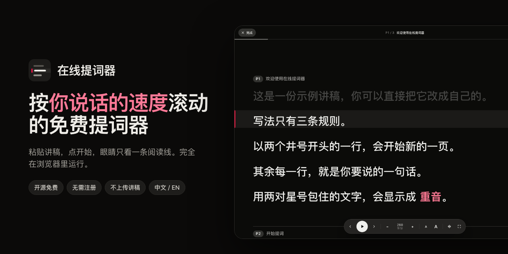

按你说话速度滚动的免费在线提词器
粘贴讲稿，点「开始提词」，眼睛只看一条阅读线。在线提词器按「字/分」控制节奏，排练时的语速就是你上台时的语速。免费、开源，完全在浏览器里运行。

要点
- 免费使用，无需注册，以 Apache 2.0 协议开源。
- 按说话速度滚动，而不是按像素：中文按字/分，英文按词/分。
- 默认语速：中文 280 字/分，英文 150 词/分，每次可调 10。
- 填写讲话时长，自动算出语速；左侧大纲标出每一页的开讲时间。
- 可选的跟读：你讲到哪里，讲稿就滚到哪里，支持中文和英文（Chrome、Edge、Safari）。
- 镜像模式适配提词玻璃，支持全屏和手机。
- 讲稿只存在你的浏览器里：没有服务器、没有账号、不做统计。
为什么按「字/分」控制语速？
大多数网页提词器按固定的「像素/秒」滚动。字号一变，同样的速度就代表完全不同的语速；一句折成三行的长句会匆匆滑过，短句却停留太久。用一种字号排练、换一种字号上台，节奏就对不上了。
在线提词器按每一行有多少字决定它在阅读线上停留多久。设成 280 字/分，一句 28 个字的话大约停留 6 秒，无论字号大小、屏幕宽窄都一样。
怎么用
- 写或粘贴讲稿。用
## 标题开始新的一页（比如每张幻灯片一页），每行一句，用**两对星号**包住要重读的字。 - 设置语速。填写这场要讲几分钟，或者直接设置字/分。左侧大纲会显示每一页的开讲时间。
- 点「开始提词」。眼睛看着阅读线，按 空格 开始或暂停。
讲稿写法
# 产品发布会 ← 可选：讲稿名称
## 开场 ← 开始新的一页
大家早上好。 ← 每一行是一句话
今天我想分享 **一个简单的想法**。 ← 重音页标题只是给你看的提示，不计入讲话时长。讲稿可以导入、导出为 Markdown 文件，也可以直接把 .md 文件拖进页面。
快捷键
| 按键 | 作用 |
|---|---|
| 空格 | 开始或暂停 |
| ← → | 上一页或下一页 |
| ↑ ↓ | 语速加快或减慢 10 |
| + − | 放大或缩小字号 |
| V | 打开或关闭跟读 |
| M | 镜像，用于提词玻璃 |
| F | 全屏 |
| Esc | 回到编辑 |
| ⌘/Ctrl + Enter | 从光标所在的页开始提词 |
适合谁用
排练路演的创业者、做演讲和直播的讲者、录制 B 站、YouTube 或课程视频的创作者，以及需要在视频会议里对着镜头念稿的人。在笔记本上使用时，把阅读线放在靠近摄像头的位置，眼神会更自然。
常见问题
免费吗？
免费，无需注册，没有付费版本，源代码以 Apache 2.0 协议开源。
讲稿会上传吗？
不会。讲稿只保存在你浏览器的本地存储里。应用没有服务器、没有账号、不做统计，也不请求任何第三方资源。
能跟着我的声音滚动吗？
能。在提词界面按 V 或点麦克风按钮打开跟读：你讲到哪里，讲稿就滚到哪里；停下来它会等你，识别错几个字也能跟上，说几句题外话不会乱跳。跟读用的是浏览器自带的语音识别（Chrome、Edge 或 Safari），你的声音可能会发送到浏览器厂商的语音服务，讲稿本身不会发送。默认关闭。
语速设多少合适？
中文默认 280 字/分，英文默认 150 词/分。也可以直接填讲话时长，让语速自动算好。
能配合提词玻璃吗？
可以。在提词界面按 M 打开镜像，文字会水平翻转。
手机和 iPad 能用吗？
能。手机浏览器可以直接使用，播放时在浏览器允许的情况下屏幕保持常亮。
能离线使用吗？
页面加载完成后不需要网络。可安装、完全离线的版本在路线图中。
能自己部署吗？
可以。它是没有构建步骤、没有依赖的静态网站。可以在 GitHub README 里一键部署到 Vercel，或者把 public/ 目录发布到任意静态托管。